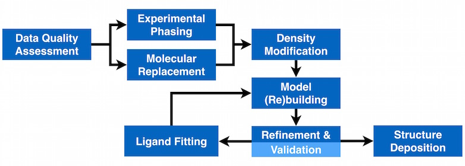

Phenix programs and their functions
The Phenix graphical interface
Dictionary of crystallographic and other terms
Complete Phenix reference documentation
FAQs: Frequently asked questions
How to install, setup and run Phenix
Index
Solving Structures by X-ray Crystallography with Phenix

Phenix Documentation for X-ray Crystallography
Checking data quality | Experimental phasing | Molecular replacement | Model building | Structure refinement
Structure validation | Ligand fitting | Making geometry restraints | Structure deposition
Phenix Documentation for Neutron Crystallography
Structure refinement | Structure validation | Making geometry restraints | Structure deposition